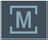
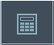

Bedienelement | Funktion |
|---|
|  | Bedienbereich umschalten Tippen Sie den aktuellen Bedienbereich an und wählen Sie in der Bedienbereichsleiste den gewünschten Bedienbereich. |
 | Betriebsart umschalten Die Betriebsart wird nur angezeigt. Um die Betriebsart umzuschalten, tippen Sie auf Bedienbereich und wählen Sie in der vertikalen Softkey-Leiste die Betriebsart. Die Auswahl der für die Betriebsart verfügbaren Funktionen wird aufgeklappt. |
| | Auswahl zuklappen Die Auswahl der für die Betriebsart verfügbaren Funktionen wird zugeklappt. |
 | Handrad ein- und ausschalten Das Handrad zum Achsenverfahren wird eingeschaltet (HT10). Das Bedienelement "Handrad" hat drei Zustände: Grau: Handrad nicht vorhanden oder nicht projektiert. Aktiv (nicht gedrückt): Handrad vorhanden und projektiert. Hinterlegt (gedrückt): Handrad ist der angewählten Achse zugewiesen.
|
| | Rückgängig Schrittweise werden mehrere Änderungen rückgängig gemacht. Sobald eine Änderung in einem Eingabefeld abgeschlossen wurde, ist diese Funktion nicht mehr verfügbar. |
| | Wiederherstellen Schrittweise werden mehrere Änderungen wiederhergestellt. Sobald eine Änderung in einem Eingabefeld abgeschlossen wurde, ist diese Funktion nicht mehr verfügbar. |
 | Virtuelle Tastatur Aktiviert die virtuelle Tastatur. |
|  | Taschenrechner Blendet den Taschenrechner ein. |
 | Online-Hilfe Öffnet die Online-Hilfe. |
 | Kamera Erstellt einen Bildschirmabzug. |
Siehe auch:
Bildschirmaufteilung